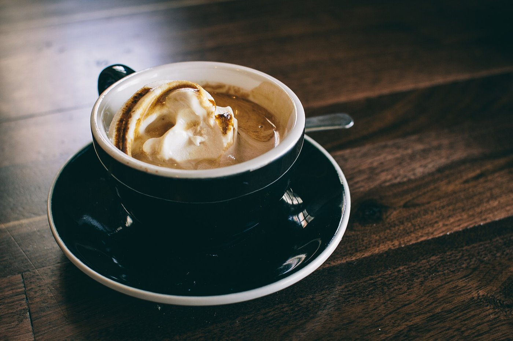

ABOUTお店のこと
「SORRIVO」はイタリア語の sorriso(笑顔)と uovo(卵)を組み合わせた店名と紹介されています。卵料理を軸に、モーニング・ランチ・カフェを楽しめるお店として、2022年11月7日に鈴鹿市のラ・ヴィータ白子1階にオープンしました。
オーナーはイタリアンのお店で経験を積まれた方で、店内は古い喫茶店のイメージを取り入れた、テーブル席とゆったり過ごせるローカウンターの空間です。エスプレッソマシンはイタリアのLa Marzocco製とのことです。
上記は2022年の開店時の報道・グルメサイトの掲載情報にもとづきます。現在の内容はInstagramなどでご確認ください。

MENUメニュー・ご案内




写真はフリー素材のイメージで、店舗の実際の様子や料理ではありません。
VOICE口コミ(イメージ例)
イメージ例卵がふわっとしていて、ひと口目から顔がほころびました。
イメージ例喫茶店のような落ち着いた雰囲気で、ゆっくりコーヒーを飲めました。
イメージ例ソースを選べるのが楽しく、また違う味を試したくなります。
上の3件は制作側が作成したイメージ例で、実在のお客様の声ではありません。
ACCESSアクセス
| 所在地 | 〒510-0236 三重県鈴鹿市中江島町19-38 |
|---|---|
| 電話 | 準備中 |
| 営業時間 | 準備中 |
| 定休日 | 準備中 |
| 価格 | 準備中 |
| SNS | Instagram @caffetteria_sorrivo |